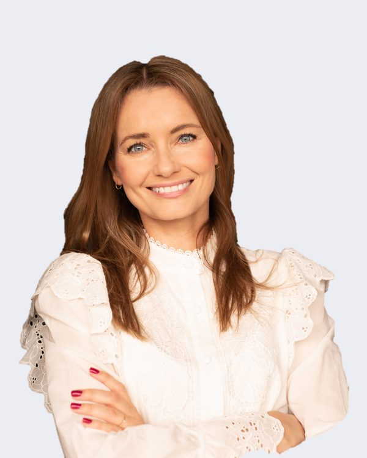

Współzałożycielka · psycholożka · mentorkaCo-founder · psychologist · mentor
Karina Tomczyk
Psycholożka z ponad 20-letnim doświadczeniem pracy z korporacjami, mentorka i konsultantka kryzysowa w biznesie. Wykładowczyni psychologii pozytywnej i przywództwa przyszłości na Uniwersytecie SWPS oraz psychologii biznesu w Akademii Leona Koźmińskiego. Autorka metody MIND-RETREAT, współtwórczyni idei Human Reflection of Business.
A psychologist with over 20 years of experience working with corporations, a mentor and business crisis consultant. Lecturer in positive psychology and future leadership at SWPS University and in business psychology at Kozminski University. Creator of the MIND-RETREAT method and co-creator of the Human Reflection of Business idea.